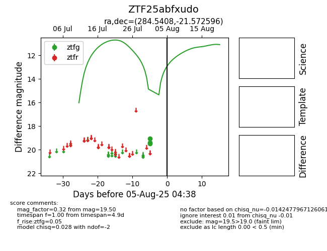

Target ZTF25abfxudo at 2025-08-05 04:38, see:
FINK: fink-portal.org/ZTF25abfxudo
Lasair: lasair-ztf.lsst.ac.uk/objects/ZTF25abfxudo
ALeRCE: alerce.online/object/ZTF25abfxudo
alt names
ZTF25abfxudo (ztf,fink)
coordinates:
equatorial (ra, dec) = (284.5408,-21.57260)
galactic (l, b) = (14.2235,-11.06601)
photometry
last ztfg=19.50
3 ztfg detections
